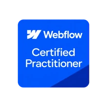

Lower Cost Per Lead
Across selected paid campaigns.
FULL-FUNNEL GROWTH SYSTEMS BUILDER
I help local service businesses and B2B companies get found, generate qualified leads, and improve conversions through SEO, paid advertising, high-performing websites, and CRM automation.
Results depend on the market, offer, budget, tracking, sales process, and implementation.
Across selected paid campaigns.
Across selected funnels and landing pages.
Across selected lead-generation projects.
From selected SEO and content projects.
WHY CHOOSE JC?
I'm JC Ricarte, a Full-Funnel Growth Systems Builder. Since 2017, I've worked across Paid Ads, SEO, landing pages, CRM, automation, and tracking.
I help B2B and B2C teams identify marketing bottlenecks, improve their growth systems, and measure results. My experience spans the United States, United Kingdom, Australia, Singapore, and other Southeast Asian markets.
Generate qualified leads and customers through Google Ads, Meta Ads, LinkedIn Ads, and performance-driven campaigns.
Improve search visibility through technical SEO, local SEO, AI search optimization, and content strategy.
Build conversion-focused websites, landing pages, and funnels that turn traffic into qualified leads.
Connect leads, CRM pipelines, automated follow-ups, and workflows into one organized sales system.
Build custom software, web apps, and internal tools that simplify operations and support business growth.
Track conversions, analyze performance, and improve campaigns and funnels using measurable data.
ONE CONNECTED SYSTEM
Reach the right audience through paid campaigns and organic search.
Targeted traffic from multiple channels.
Match the message, offer, form, and page to the visitor’s intent.
Responsive, SEO-ready websites that guide visitors toward an inquiry.

Collect the right information and guide the next step automatically.
Captured, qualified, and ready for follow-up.
Route leads, manage pipeline stages, and automate timely follow-up.
Nurtured through timely, personalized follow-up.
Build a clearer path from traffic to qualified sales opportunities.
Track qualified leads, appointments, and next sales steps.
Track meaningful results, find weak points, and improve the parts that work.
A clearer path to business growth.
HOW I CAN HELP
Whether you need better search visibility, more qualified leads, a higher-converting website, or improved business systems, I help build and optimize the parts of your growth process that matter.
Improve your visibility across traditional search and AI-powered search experiences through technical SEO, content optimization, local SEO, and clear website architecture.
Technical SEO · Local SEO · AEO · GEO · Content Strategy
Explore SEO ServicesBuild fast, search-ready, conversion-focused websites designed to communicate your value, attract the right visitors, and turn traffic into inquiries.
WordPress · SEO Web Development · Landing Pages · CRO
Explore Website DevelopmentOrganize leads, improve follow-up, and reduce manual work through connected CRM pipelines, automations, calendars, and lead nurturing workflows.
GoHighLevel · Pipelines · Workflows · Email/SMS Automation
Explore CRM & AutomationReach high-intent audiences and improve acquisition efficiency with Google Ads, Meta Ads, LinkedIn Ads, conversion tracking, and ongoing campaign optimization.
Google Ads · Meta Ads · LinkedIn Ads · PPC Strategy
Explore Paid AdvertisingBuild custom software, web applications, and integrations that support business operations, connect systems, and solve specific workflow challenges.
Custom Software · Web Applications · API Integrations · AI-Assisted Development
Explore Software DevelopmentSELECTED WORK · CONTENT IN PREPARATION
Explore examples of how I approach SEO, paid acquisition, website optimization, and business automation. Each project highlights the challenge, the work involved, and the results where reliable data is available.
Search-focused website work covering technical SEO, service-page architecture, internal linking, indexing, performance, and conversion improvements.
Approved project & results pendingPaid acquisition systems connecting audience targeting, campaign structure, landing pages, conversion tracking, and lead-quality optimization.
Approved project & results pendingLead management systems involving pipelines, forms, appointment workflows, follow-up sequences, and sales process automation.
Approved project & results pendingThese are draft portfolio categories. Individual projects, approved visuals, and verified outcomes will be added before publication.
A FEW THINGS TO KNOW
Clear answers about my services, approach, and how to get started.
I help connect SEO / AEO / GEO, website development, paid advertising, CRM automation, and software development into a more effective growth process. The work can focus on one area or several connected parts of your system.
My focus is local service businesses and B2B companies. My experience also spans B2C, SaaS, e-commerce, and construction businesses.
Yes. I can review and improve an existing website, funnel, CRM pipeline, or automation workflow. The starting point is understanding what is already working and where leads or opportunities are being lost.
I review your business goals, acquisition channels, website, conversion tracking, and lead management process. That helps identify the biggest bottlenecks and agree on practical priorities before implementation.
The measures depend on the project. I focus on meaningful outcomes such as qualified inquiries, lead quality, conversions, and follow-up performance, supported by the tracking and reporting available for your business.
Share your website, what your business does, the challenge you want to solve, and what you are trying to achieve. Email carlo.ricarte093@gmail.com to start a conversation.